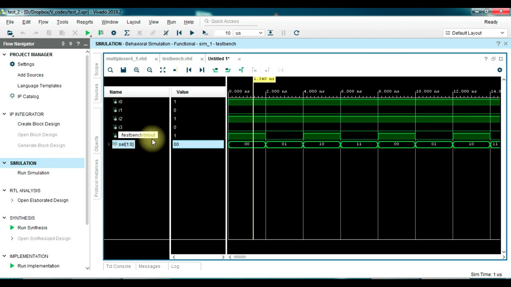

My Projects
Here you have an overview of some of the projects I have made, contributed to, or been involved in. More info is available on my GitHub (Work in progress)
Project Gallery


Mars Rover
Final year engineering project at INSA Toulouse. Project lead and developer for computer vision applications, cyber-physical algorithms, and path planning for autonomous exploration

AI Project - "tinc-GPT"
A RAG-based OpenAI chatbot prototype for TINC Tech Incubator, facilitating founders in applying their learnings to business.
TINC - Tech Incubator Program
Helped in the coordination and execution of the biannual Tech INCubator program for Innovation Norway Silicon Valley. A series of workshops, events, keynote presentations and more over the course of 4 weeks online and 1 week in-person at Nordic Innovation House in Palo Alto.
Project lead - How to do business in California
Managed and led a project for Innovation Norway Silicon Valley in forming and creating first version of a guideline package for start-ups looking to expand to the US with a focus on California and the San Francisco Bay Area.
Real-time OS RC car
RTOS programming project to control a car in an arena, with camera surveillance, a controller hub and a python UI controller on the desktop.


FPGA/VHDL Ethernet Controller
VHDL programming project, implementing an Ethernet controller on an FPGA, using the Xilinx Vivado IDE and the Ethernet protocol documentation.

Electric Scooter Control Engineering
Study, design, and implementation of the control law to control the torque and speed of the electric motor of a scooter. A combined project for numeric control and power electronics courses at INSA Toulouse, we used power conversion principles to make and control an inverter.
Transistor-level design of a voltage-controlled oscillator
Study and design of a voltage-controlled oscillator (VCO) using a 0.18µm CMOS technology. The VCO is a key component of a phase-locked loop (PLL), which is used in many applications such as frequency synthesis, clock recovery, and clock generation. The VCO is designed to operate at a frequency of 2.4 GHz, which is the frequency of the IEEE 802.11b/g/n standard for wireless local area networks (WLANs). Used the Microwind software to implement the nanometer-level design of the VCO.

Information Manager and Editor
Volunteer work as the information manager, social media manager, and editor for ANSA (Association for Norwegian Students Abroad) Toulouse for 1 year. Digitalized the association's local student newspaper during COVID and coordinated and co-organized events and trips for Norwegian students in Toulouse, France.